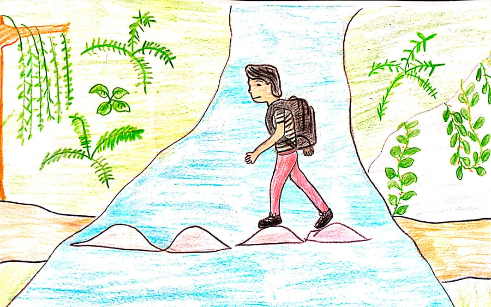
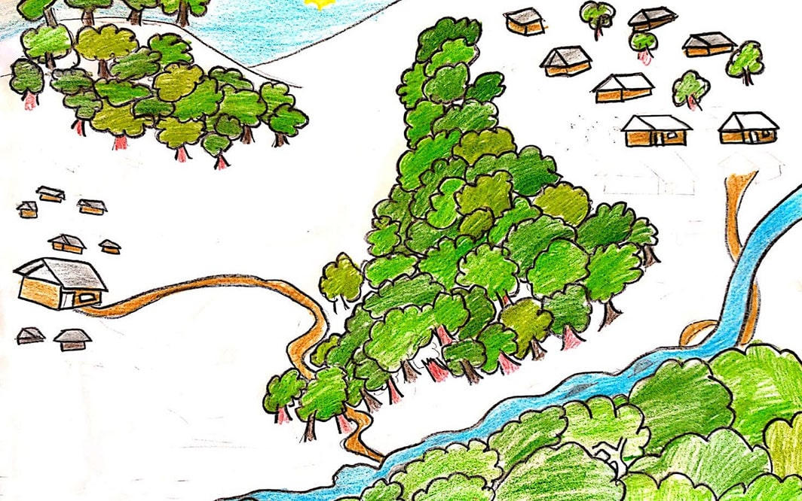
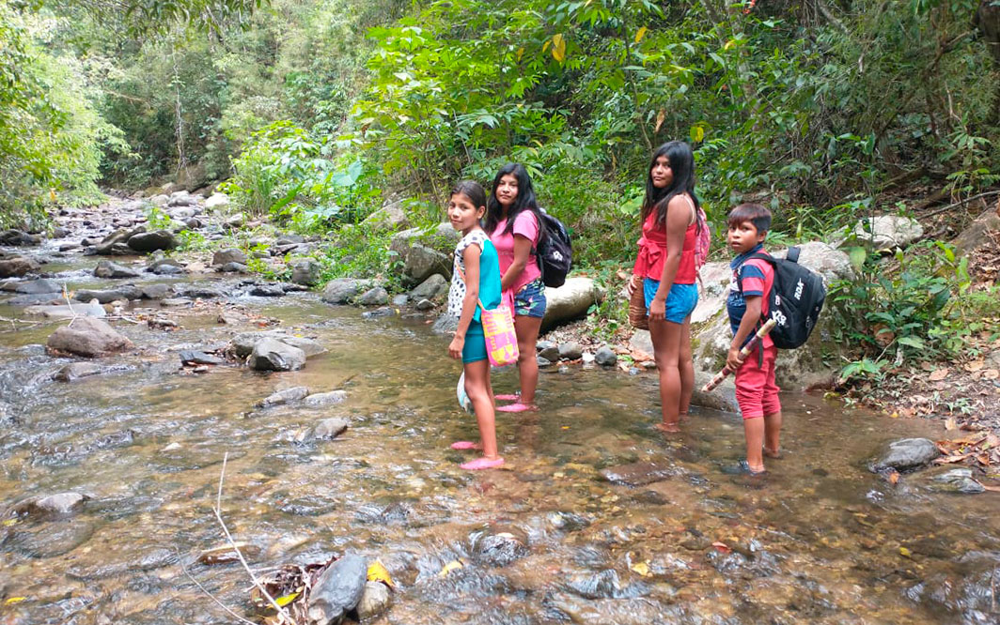
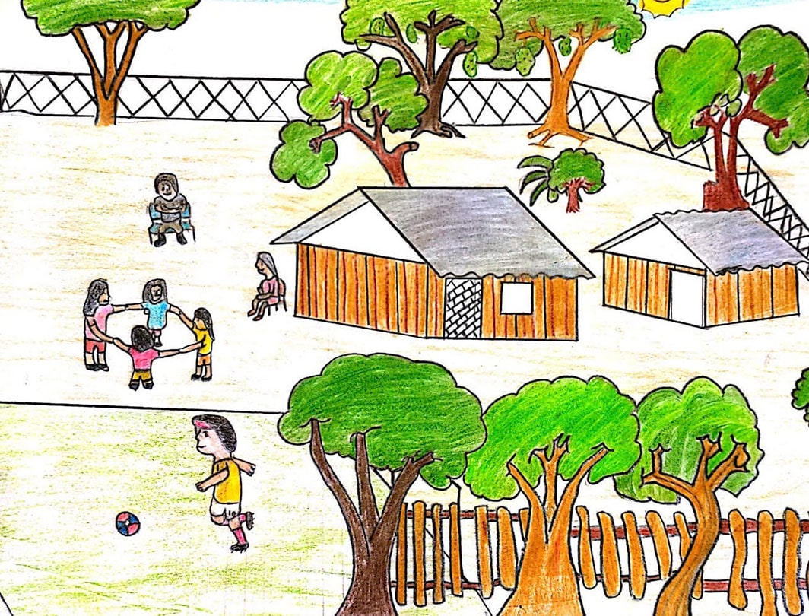
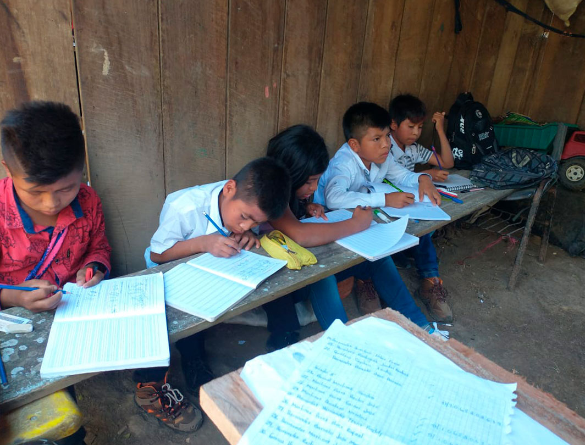
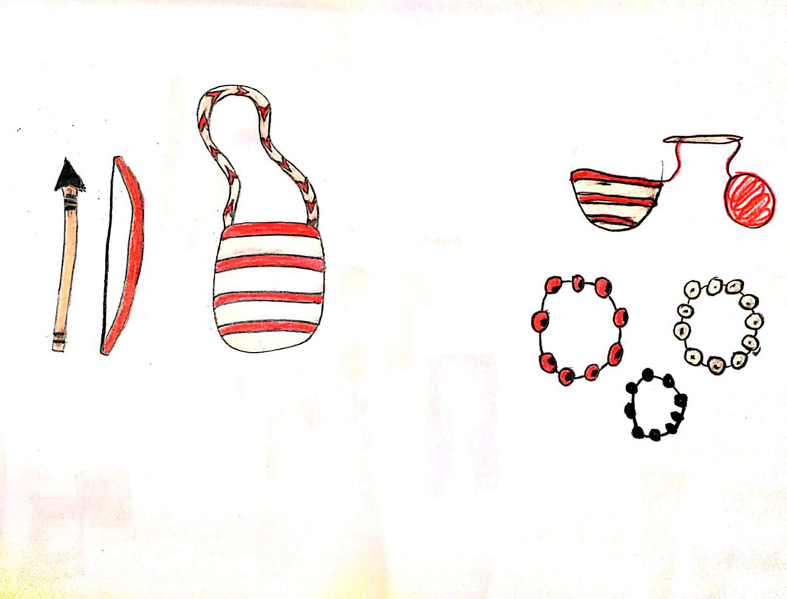
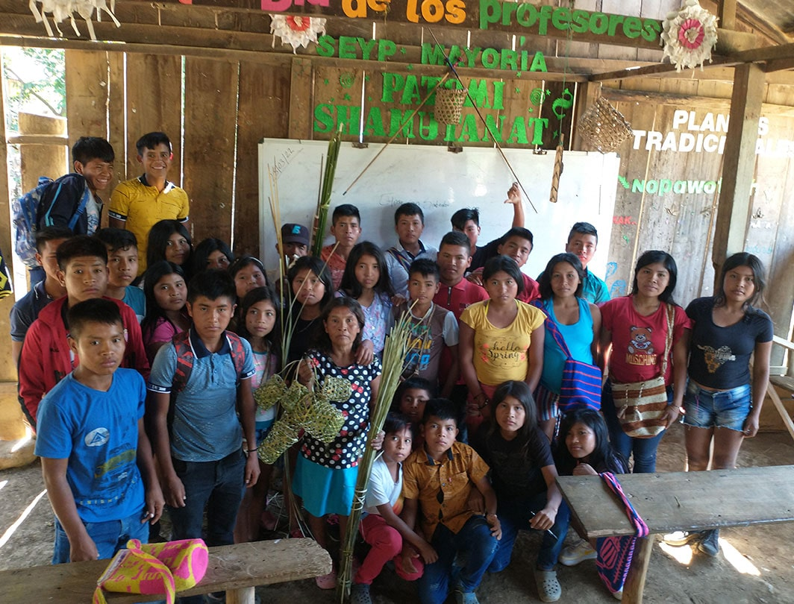

Wilmer José Pérez Capitán, de 12 años, dibujó su territorio, la escuela y a él mismo. Foto: composición de Giovanni Salazar de Agenda Propia.
Niño Yukpa construye su sueño en medio de dificultades en su territorio
En el Resguardo Sokorhpa, en la Serranía del Perijá, los niños y las niñas deben pasar por caudalosos ríos y caminar varios kilómetros en medio del bosque para recibir clases. Wilmer José Pérez Capitán, de 12 años, cuenta que su colegio está deteriorado y que carecen de herramientas tecnológicas, aún así mantiene intacto su sueño de ser maestro de matemáticas.
Por: Diomedes de Jesús Bernal Fernández.Para los niños y las niñas del Resguardo Sokorhpa, del pueblo indígena Yukpa, ir al colegio es una odisea. Los centros educativos quedan muy distanciados de sus casas y el camino es riesgoso. Wilmer José Pérez Capitán, de 12 años, quien cursa sexto grado y vive en la comunidad Los Granados —municipio de Becerril, Cesar—, dice que cada mañana se desplaza a pie por el bosque y atraviesa más de ocho “pases” o improvisados puentes del río Los Granados para ir a estudiar.
Donde reside Wilmer enseñan hasta quinto de primaria, por lo que para cursar sexto debe trasladarse hasta la comunidad La Mayoría, distante una hora. Wilmer asegura que es un trayecto peligroso, por ejemplo, teme que cuando llueve le caiga un árbol encima y también le dan miedo las picaduras de las serpientes.
Cada mañana, Wilmer sale madrugado de su casa, lleva botas pantaneras, un morral, un caucho y una gorra para cubrirse del sol y de la lluvia, y empaca sus cuadernos en bolsas plásticas para evitar que se mojen.

Wilmer José Peréz Capitán dibujó cómo es pasar por los ríos de su territorio. Foto: dibujos de Wilmer José Pérez Capitán.
“El año pasado (2021) terminé quinto aquí en mi comunidad. Ahora me toca caminar una hora y con mis compañeros pasamos ocho ríos pequeños, pero cuando es época de lluvias los ríos se crecen y no podemos pasar, por lo cual nos toca faltar a clases”,relata Wilmer.
El papá de Wilmer, José Jaider Pérez, lo acompaña hasta la mitad del recorrido ya que por su trabajo en el campo no puede llegar con él hasta la escuela.
En tiempo de invierno, es decir, entre abril y finales de mayo, según Wilmer, no logran ir al colegio. Las inundaciones y los daños en los caminos de la Serranía del Perijá, —cordillera montañosa donde queda ubicado su resguardo— imposibilitan el desplazamiento a pie, por lo que se ausentan varios días. En esos meses, la única forma de estudiar es con guías y tareas que dejan sus profesores, pues tampoco tienen señal de internet ni de celular para recibir las clases de manera virtual.

Las comunidades del pueblo indígena Yukpa están ubicadas en la Serranía del Perijá, zona de frontera entre Colombia y Venezuela. Foto: dibujos de Wilmer José Pérez Capitán.
“Los padres de familia junto con las autoridades tradicionales, desde hace cuatro años llegamos a un acuerdo, donde los docentes mandan guías de trabajo en tiempos de lluvia o invierno. Este caso es más que todo con los niños de bachillerato, porque en tiempos aquellos cuando los niños faltaban a clases por motivos anteriormente mencionados bajaban de notas, se desanimaban y abandonaban la escuela, motivo por el cual yo abandoné la escuela”, dice el papá de Wilmer.
En Raqaypampa, la dotación del desayuno escolar corre por cuenta de su Gobierno Indígena Originario Campesino (GAIOC), un régimen pionero en Bolivia de autonomía política y administrativa de base cultural indígena. Ese sistema prevé, entre otros procedimientos, que sea el pueblo, reunido en asamblea, el que defina la logística de la alimentación complementaria para las niñas y los niños, desde la definición del menú hasta la forma de preparación de las comidas.
A este acuerdo de las guías se llegó también para mitigar riesgos en cuanto a la salud y accidentes. Wilmer recuerda que se ha enfermado varias veces de gripa.

Wilmer y sus compañeras van de regreso a sus casas atravesando ríos. Foto: Diomedes de Jesús Bernal Fernández.
El Resguardo Sokorhpa está conformado por 15 comunidades integradas por 683 hombres y 609 mujeres, de los cuales 410 son niñas entre 1 y 14 años, y 401 niños de las mismas edades, de acuerdo con datos del censo del Resguardo realizado en diciembre de 2021.
La cotidianidad de Wilmer transcurre entre ir al colegio, acompañar a sus cuatro hermanas, y aprender de la agricultura, esta última es el principal sustento de su familia. Uno de los productos que cultivan es el frijol, al año obtienen dos cosechas. También siembran el maíz kariako, con lo que hacen chicha dulce y bollos o tamales pequeños.
“Mi papá siembra plátano, yuca, malanga, maíz, guandul (una especie de frijol) y otras clases de frijol para vender, con eso me compra los útiles escolares, mi ropa y alimentos del pueblo (ciudad)”, comenta.
La familia de Wilmer se sostiene de los cultivos de plátano, maíz y yuca, entre otros productos. Foto: dibujos de Wilmer José Pérez Capitán.
El frijol es uno de los alimentos que cultiva el papá de Wilmer y que vende en el mercado del pueblo para comprarle los útiles escolares a sus hijos. Foto: dibujos de Wilmer José Pérez Capitán.
A Wilmer, de contextura delgada, 1,22 de estatura, ojos negros y cabello liso, le gusta el deporte. “Me gusta jugar fútbol con mis amigos en las tardes”, comparte en medio de risas.
Su sueño es ser docente en matemáticas y también poder ayudar a mejorar la calidad de vida de su familia.
“Nosotros como papás queremos que nuestro hijo estudie, ya que él es muy activo en las aulas de clase y es responsable con sus tareas. Nos gustaría que estudie lo que quiera en una universidad cuando termine bachillerato, porque hasta el momento no sabemos qué va
estudiar, aunque le gusta ser docente de matemáticas”, dice Martha Cecilia Capitán Bohórquez, la mamá de Wilmer.
Ella agrega que su hijo siempre les pide ayuda en la realización de sus trabajos del colegio, se esmera por llevar los cuadernos ordenados y le colabora a sus hermanitas hacer las tareas básicas como sumas y restas, dibujar y colorear.

Wilmer José Pérez Capitán dibujó las actividades lúdicas que realiza su familia. También se pintó a él mismo jugando fútbol. Foto: dibujos de Wilmer José Pérez Capitán.
Escuelas deterioradas
En cada comunidad del Resguardo Sokorhpa hay una escuela de formación primaria, en dos ofrecen hasta noveno grado y tan solo en una comunidad hay clases hasta undécimo grado.
La infraestructura del colegio donde estudia Wilmer está deteriorada. “Es grande, pero es antigua, está en mal estado, cuando llueve hay goteras, no tenemos pupitres. Nos sentamos en banquitas que hacen nuestros papás”, asegura Wilmer, quien además agrega: “me gustaría que pudieran hacer una escuela nueva y pupitres para que nos sintamos cómodos”.
Allí estudian 34 niños y niñas de grados sexto, séptimo y octavo. Wilmer comparte salón con 10 compañeros, de acuerdo con Jesús García, docente de lengua castellana.

Wilmer y sus compañeros reciben clases en banquitas hechas por sus padres en la comunidad Mayoría. Foto: Diomedes de Jesús Bernal Fernández.
El profesor Jesús también explica que tan solo hay tres salones y “hay uno que se tiene que dividir en dos para distribuir a los estudiantes, lo que ocasiona dificultad de comprensión de algunos estudiantes, pues en varios momentos nos ha tocado dictar clases de diferentes grados al mismo tiempo”.
Además, no cuentan con dotación para la sala de informática, los espacios deportivos, laboratorios y baños. “Sin los materiales es difícil educar y enseñar a los estudiantes a la realidad de lo que se vive como sociedad o como en las grandes ciudades y en la era tecnológica, es aquí donde los niños no tienen acceso al conocimiento de la realidad occidental o a la calidad educativa”, asegura el profesor Jesús, quién también dice que “faltan docentes, tan solo hay cuatro maestros”.
Las y los estudiantes reciben clases al aire libre, ya que hay un salón que se divide en dos y para lograr mejor atención los profesores los sacan a espacios abiertos. Foto: Diomedes de Jesús Bernal Fernández.
A muchos de las y los estudiantes del Resguardo Sokorhpa les tocaba trasladarse a un pueblo (occidental) más cercano donde pudieran culminar sus estudios de bachiller, pues allí solo había formación hasta noveno grado, según asegura Martha Capitán, la mamá de Wilmer.
Ella agrega que al entrar a una escuela muy distinta se enfrentaban a las dificultades de conocimiento, a los manejos de computadores, al inglés y materias como la química y la física. También a problemas económicos, “porque para vivir en una ciudad se debe tener dinero para comprar comida, servicios y todo lo necesario. Mientras los niños en sus comunidades no manejan dinero, porque los padres de familia nos dedicamos al cultivo para el autoconsumo”.
Los papás de Wilmer recuerdan que no pudieron terminar sus estudios porque no tenían los medios económicos, pero están haciendo el esfuerzo para que sus hijos estudien hasta grado once, por ello hacen un llamado a las autoridades del departamento del Cesar para que doten la escuela, o implementen un internado.
Saberes propios
A partir de 2019 se implementó en el Resguardo el Sistema Educativo Indígena Propio (SEIP) de acuerdo con el decreto 2500 del 12 de julio de 2010. Los niños y las niñas reciben los conocimientos y saberes propios como artesanías, historias de los antepasados y medicina tradicional.
“Lo más importante es educar a los estudiantes con un sentido de pertenencia, una forma de fortalecimiento, para que las nuevas generaciones tengan claro quiénes son, para que así nunca se acabe la identidad cultural del pueblo Yukpa”, dice Esneda Saavedra Restrepo, lideresa indígena.
Los papás de Wilmer recuerdan que no pudieron terminar sus estudios porque no tenían los medios económicos, pero están haciendo el esfuerzo para que sus hijos estudien hasta grado once, por ello hacen un llamado a las autoridades del departamento del Cesar para que doten la escuela, o implementen un internado.
Es por ello que en el Resguardo Sokorhpa y en la escuela de Wilmer contratan sabedores, “son ancianos conocedores de nuestra identidad”, sostiene Esneda.

La flecha, la mochila y los collares elaborados a mano representan al pueblo indígena Yukpa. Foto: dibujos de Wilmer José Pérez Capitán.
Wilmer, por ejemplo, aprende sobre su cultura, sabe que los hombres llevan arcos con flechas porque los identifica como “hombre Yukpa fuerte” y las mujeres usan collares. En la escuela todos tejen mochilas y canastos de fique. “Con el objetivo del sentido de la igualdad, que todos hagan sus deberes sin importar el género, ya que en la historia de los antepasados las mujeres eran las encargadas de hacer artesanías”, explica Luz Marina Barreto, sabedora.
En cuanto al origen de su pueblo, les han enseñado que Aponto (Dios en lengua Yukpa) y el pájaro carpintero los sacó del árbol Manʉrhachayi, (en español es conocido como sangregado). Y sus conocimientos, sabidurías, idioma y todo lo que los identifica fue compartido por Aponto, y que estos fueron transmitidos de generación en generación, según les relata Luz Marina.

Estudiantes en clases con su sabedora Luz Marina Barreto. La mujer lleva los canastos representativos del pueblo Yukpa. Foto: Diomedes de Jesús Bernal Fernández.
La lideresa Esneda también asegura que tras las luchas por una educación digna que ha liderado el pueblo Yukpa logró “abrir dos centros educativos para la formación pos primaria (hasta 9°) y una sede que cuenta hasta grado undécimo en un centro educativo en la comunidad Sokorhpa. Pero a pesar de estos logros, los niños y las niñas aún padecen dificultades porque otras comunidades están dispersas y no tienen acceso a educación”.
El Yukpa es uno de los 34 pueblos indígenas que la Corte Constitucional declaró en 2009 en riesgo de exterminio por desplazamiento forzado a raíz del conflicto armado o muerte natural o violenta de sus integrantes (Auto 004), por ello, sus comunidades resisten a no desaparecer y le apuestan a una educación digna de sus hijos e hijas. También en su plan de vida y salvaguarda, elaborado en 2014, reclaman derechos de salud, autonomía y protección de sus territorios.
“Los padres de familia estamos conscientes de que aquel que no estudia no tiene futuro, entonces cada día enseño a mis hijos la importancia de estudiar para que tengan una buena calidad de vida”, dice la mamá de Wilmer.
Wilmer no se desanima, es feliz caminando a su escuela por horas y eso hace orgullosos a sus papás, “me gusta caminar y hacia la escuela mucho mejor”, dice que quiere un futuro mejor para todos los niños y niñas indígenas de su pueblo y de Colombia.
Nota. Esta historia hace parte de la serie periodística Dibujando mi realidad, #NiñezIndígena en América Latina, cocreada con niños, niñas, periodistas y comunicadores indígenas y no indígenas de la Red Tejiendo Historias (Rede Tecendo Histórias), bajo la coordinación editorial del medio independiente Agenda Propia.